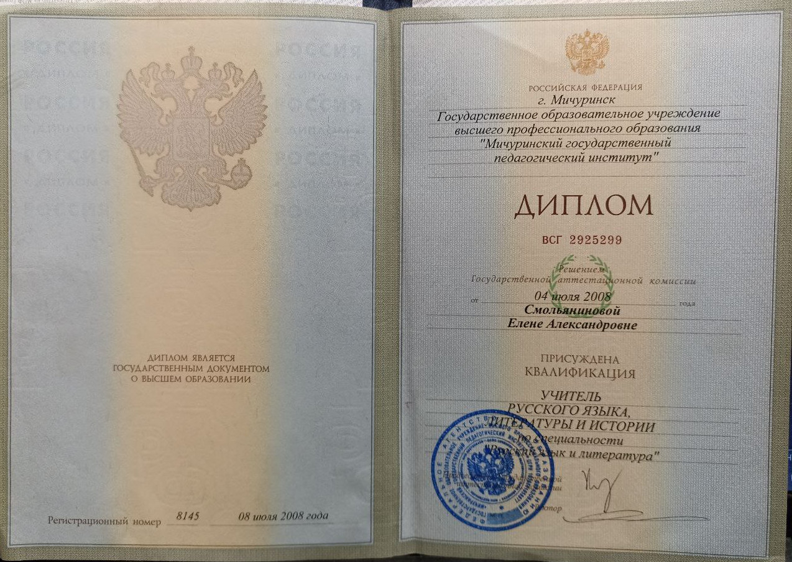

Смольянинова Елена Александровна
Моя визитная карточка
Общие сведения
Дата рождения:
14 февраля 1986г
Образование:
высшее «Мичуринский государственный педагогический институт» 2008г
Специальность:
русский язык и литература
Квалификация:
учитель русского языка литературы и истории
Педагогический стаж работы:
11 лет

Эссе «Я — педагог!»
С самого детства я мечтала работать с детьми. Собирала их вокруг себя и рассказывала им сказки. Когда я выросла, моя мечта сбылась. Очень люблю свою профессию. Открывать новый мир для детей — это очень интересно. Каждый новый день полон чудес и открытий.
Мне нравится смотреть на жизнь, восторженными глазами детей. Каждый день начинается в ожидании чуда. Очень хочется превратить каждое мгновение в волшебную сказку. Настоящий педагог должен уметь всё и постоянно совершенствоваться. Чем больше он знает, тем легче ему делиться знаниями. Я стараюсь находить время для получения новых знаний.
Очень важную роль играет работа с родителями. Ведь мы делаем одно важное дело, открываем огромный мир ребёнку.
***
Много профессий разных,
Каждая очень важна,
Но среди всех на свете
Милее мне одна.
Каждое утро с улыбкой
Встречаю я ребятню
И повторять не устану:
Работу свою, я люблю!
Статьи обо мне
Моя визитная карточка
| Дата рождения: | 14 февраля 1986г |
| Образование: | высшее «Мичуринский государственный педагогический институт» 2008г |
| Специальность: | русский язык и литература |
| Квалификация: | учитель русского языка литературы и истории |
| Педагогический стаж работы: | 11 лет |
{kind=link}
Эссе «Я — педагог!»
С самого детства я мечтала работать с детьми. Собирала их вокруг себя и рассказывала им сказки. Когда я выросла, моя мечта сбылась. Очень люблю свою профессию. Открывать новый мир для детей — это очень интересно. Каждый новый день полон чудес и открытий.
Мне нравится смотреть на жизнь, восторженными глазами детей. Каждый день начинается в ожидании чуда. Очень хочется превратить каждое мгновение в волшебную сказку. Настоящий педагог должен уметь всё и постоянно совершенствоваться. Чем больше он знает, тем легче ему делиться знаниями. Я стараюсь находить время для получения новых знаний.
Очень важную роль играет работа с родителями. Ведь мы делаем одно важное дело, открываем огромный мир ребёнку.
*** Много профессий разных, Каждая очень важна, Но среди всех на свете Милее мне одна. Каждое утро с улыбкой Встречаю я ребятню И повторять не устану: Работу свою, я люблю!